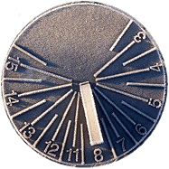

We're glad you could come and visit!
Please check out the rest of the site and leave your comments below.
This all started many years ago when I read about the iconoclasm of the last millennium. I was worried that the psychology of these times mixed with the modern scientific knowledge could lead to some serious damage to the biosphere i.e. - religious fundamentalists might feel they're the hand of GOD and try for nuclear anialation or something like that.
Now I'm not acting out of fear. To me modern techniques of social organization are inappropriate and unsustainable. I have gone ahead and invented some new ones.
I am looking forward to and preparing for the collapse of the "western world" which now includes almost everywhere. It is time for humanity to put away its childish things and start to behave more responsibly. Roughly this means we should stop wreaking everything natural and beautiful and learn to live with each other.
A green dot is the logo of A Save The Universe Club. It represents everything real and imagined in this universe and any other universe that does exist has existed or will ever exist anywhere. It is the members responsibility to decide what is important. Some ideas are assumed to have significance due to our common humanity and the interdependence of life on earth. These are the ideas presented here.
ASTUC is a social sculpture, that is a social construction based on aesthetics, created to reweave the fabric of society. The artist believes that by making subtle changes to the structure of society we will redirect the course of human development.This is done by harmonizing social rhythms with natural rhythms.
This means we should do things according to patterns that are relevant to the human condition: living according to the seasons and the rhythm of the day. The ancient Summerians invented the 12 hours and 60 minutes because they were afraid of having to deal with fractions. They hadn't been mathematically invented yet. A numerical base combined of 12 and 60 made everything evenly divisable. Their civilization wasted the environment and vanished off the face of the earth.
Tell me you want to be a member and I will show you how it works.
Thanks for visiting, would you care to leave some comments?
Check here if you would like this
to be a private message!
Comments: